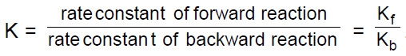

Reactions reach chemical equilibrium when the rate of the forward reaction equals the rate of the reverse reaction. In this lecture, we discuss the nature of chemical equilibrium and of the chemical equilibrium constant. We start to consider how external factors can “push” the equilibrium in one direction or the other.
Chemical Equilibrium
External Effects on K (Le Châtlier’s Principle) (continued)
Temperature Dependence of K
Applications of Le Châtlier’s Principle
Significant Figure Rules for Logs
A system in equilibrium that is subjected to a stress tends to respond in a way that minimizes that stress. In this lecture, viewers will learn about chemical reactions but will also learn some important life lessons.
At equilibrium
(i) Rate of forward reaction = rate of backward reaction
(ii) Concentration (mole/litre) of reactant and product becomes constant.
(iii) G = 0.
(iv) Q = Keq.
Equilibrium constant (K) :
Equilibrium constant in terms of concentration (KC) :
Equilibrium constant in terms of partial pressure (KpP) :
Equilibrium constant in terms of mole fraction (Kx) :
Relation between Kp & Kc :
Relation between Kp & Kx :
Relation between equilibrium constant & standard free energy change :
Reaction Quotient (Q) :
Degree of Dissociation (a) :
a = no. of moles dissociated / initial no. of moles taken = fraction of moles dissociated out of 1 mole.
Note :% dissociation =a x 100
Observed molecular weight and Observed Vapour Density of the mixture : Observed molecular weight of An(g)
External factor affecting equilibrium :
Le Chatelier's Principle:
If a system at equilibrium is subjected to a disturbance or stress that changes any of the factors that determine the state of equilibrium, the system will react in such a way as to minimize the effect of the disturbance.
Effect of concentration :
If the concentration of reactant is increased at equilibrium then reaction shift in the forward direction
If the concentration of product is increased then equilibrium shifts in the backward direction
Effect of volume :
If volume is increased pressure decreases hence reaction will shift in the direction in which pressure increases that is in the direction in which number of moles of gases increases and vice versa
If volume is increased then, for
Δn > 0 reaction will shift in the forward direction
Δn < 0 reaction will shift in the backward direction
Δn = 0 reaction will not shift
Effect of pressure :
If pressure is increased at equilibrium then reaction will try to decrease the pressure, hence it will shift in the direction in which less no. of moles of gases are formed
Effect of inert gas addition :
Constant pressure :
If inert gas is added then to maintain the pressure constant, volume
is increased. Hence equilibrium will shift in the direction in which larger
no. of moles of gas is formed
Δn > 0 reaction will shift in the forward direction
Δn < 0 reaction will shift in the backward direction
Δn = 0 reaction will not shift.
Constant volume :
Inert gas addition has no effect at constant volume
Effect of Temperature :
Equilibrium constant is only dependent upon the temperature.
If plot of nk vsis plotted then it is a straight line with slope =and intercept =
For endothermic (ΔH > 0) reaction value of the equilibrium constant increases with the rise in temperature
For exothermic ( ΔH < 0) reaction, value of the equilibrium constant decreases with increase in temperature
For ΔH > 0, reaction shiffts in the forward direction with increase in temperatutre
For ΔH < 0, reaction shifts in the backward direction with increases in temperature
If the concentration of reactant is increased at equilibrium then reaction shift in the forward direction
If the concentration of product is increased then equilibrium shifts in the backward direction
Vapour Pressure of Liquid :
Thermodynamics of Equilibrium :